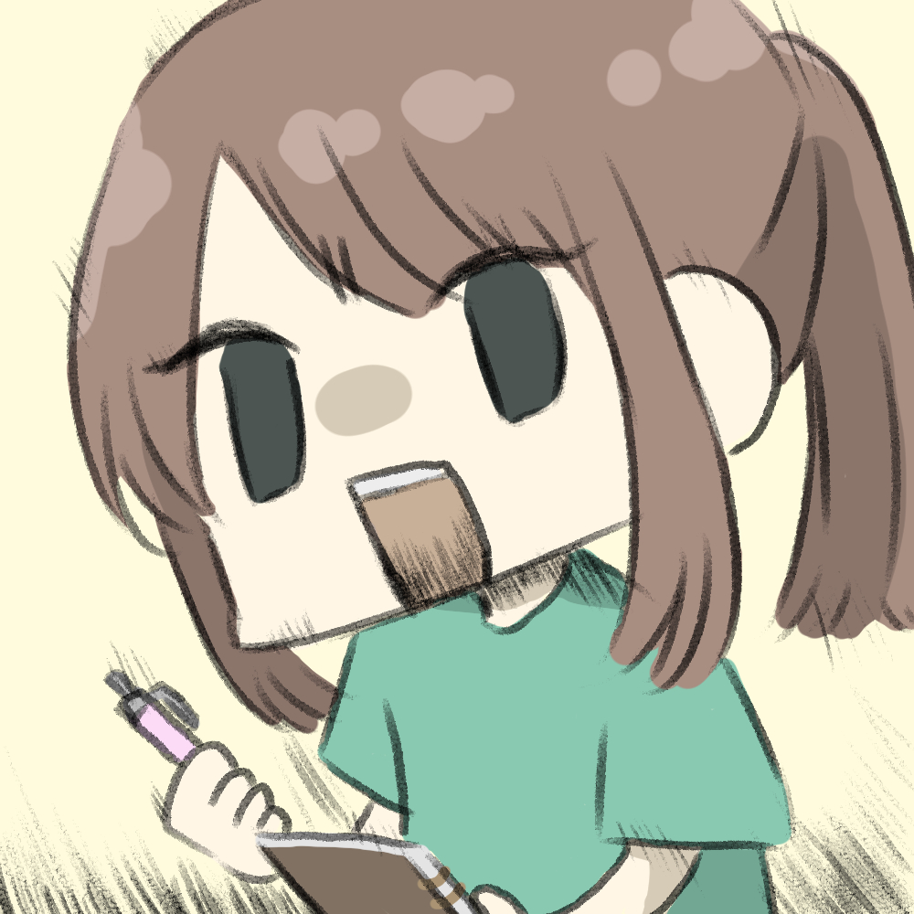

About
 渡部鈴音 (わたなべ すずね)
2001年1月1日生まれ 埼玉県在住
某大学 三年(2022年3月9日現在) 某別大学の漫研に所属
未だ一度もサークルの取り組みに参加していないが、参加したいという気持ちはある。本当に
作業はほぼパソコン内で完結している。 最近愛用していたタブレットが不調なので購入を検討中
好き
一次創作(自分のも他人のも大好きです)
肉(人間なのだから肉が好きなのは当たり前ですね)
甘いもの(抽象的ですね。特に綿菓子と金平糖が好きです)
ディズニー(特にシーにお世話になっています) 他
嫌い
蚊(本当に嫌。悪しき生命体。最悪。雑魚。底辺)
趣味など
お絵かき(アナログが多い)
動画制作(趣味の範囲内)
音声ライブラリの作成([Works]にて掲載)